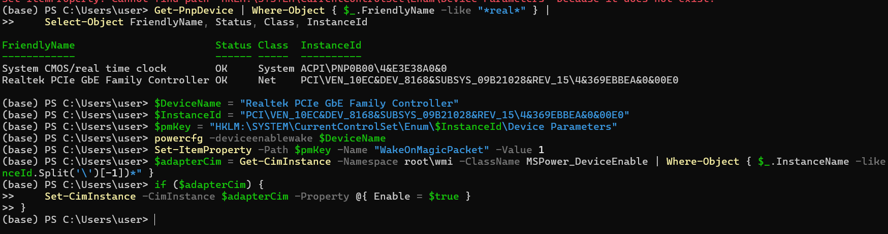

Una guía detallada para configurar Wake-on-LAN con PowerShell, que cubre los comandos básicos y las formas de resolver problemas típicos que surgen debido a las diferencias en los controladores de los adaptadores de red.
Antes de configurar Wake-on-LAN (WOL) para un adaptador de red, debe determinar con precisión con qué dispositivo está trabajando. Para ello, utilice un comando de PowerShell que busque dispositivos por parte de su nombre (por ejemplo, "Realtek" o "Intel").
!(../assets/manage-wol/1.png)
Este comando le dice al sistema: > "Muéstrame todos los dispositivos cuyo nombre contenga la palabra «Realtek», y muéstrame una tabla con cuatro columnas: nombre completo, estado, clase e ID del sistema."
Get-PnpDevice: Obtiene una lista completa de todos los dispositivos Plug-and-Play.| (Canalización): Pasa la lista más adelante.Where-Object { ... }: Filtra la lista, dejando los dispositivos cuyo nombre (FriendlyName) contenga "Realtek".| (Canalización): Pasa la lista filtrada.Select-Object ...: Formatea la salida, mostrando solo las propiedades necesarias.Encontrar el dispositivo deseado y tomar el primero de la lista
$device = Get-PnpDevice | Where-Object { $_.FriendlyName -like "*Realtek*" } | Select-Object -First 1
*Escribir sus propiedades en variables*
$DeviceName = $device.FriendlyName
$InstanceId = $device.InstanceId
$pmKey = "HKLM:\SYSTEM\CurrentControlSet\Enum\$InstanceId\Device Parameters"
El comando powercfg le da al dispositivo el permiso "oficial" de Windows para activar el sistema.
powercfg -deviceenablewake $DeviceName
Este comando es equivalente a marcar la casilla "Permitir que este dispositivo reactive el equipo".
Su acción inversa — la desactivación:
powercfg -devicedisablewake $DeviceName
La configuración de WOL se encuentra en los parámetros propios del controlador, que se almacenan en el registro.
Para marcar la casilla "Permitir que solo un paquete mágico reactive el equipo",
utilice el comando Set-ItemProperty.
# Establecer la propiedad
Set-ItemProperty -Path $pmKey -Name "*WakeOnMagicPacket" -Value 1
Acción inversa — deshabilitar WOL (Value 0):
Set-ItemProperty -Path $pmKey -Name "*WakeOnMagicPacket" -Value 0
Problema El nombre de este parámetro puede diferir entre fabricantes. Por ejemplo, para Intel es
*WakeOnMagicPacket, y para Realtek —WakeOnMagicPacket(sin*). Si la configuración no se aplica, verifique el nombre correcto con el comandoGet-ItemProperty -Path $pmKeyy úselo.
Para estar completamente seguro de que la configuración de administración de energía se aplica correctamente, utilizamos el estándar moderno CIM (Common Information Model).
# Encontrar el objeto CIM asociado a nuestro dispositivo
$adapterCim = Get-CimInstance -Namespace root\wmi -ClassName MSPower_DeviceEnable | Where-Object { $_.InstanceName -like "*$($instanceId.Split('\')[-1])*" }
# Aplicar cambios
if ($adapterCim) {
Set-CimInstance -CimInstance $adapterCim -Property @{ Enable = $true }
}
